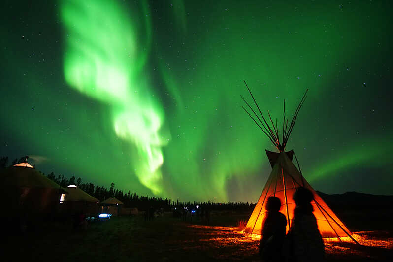
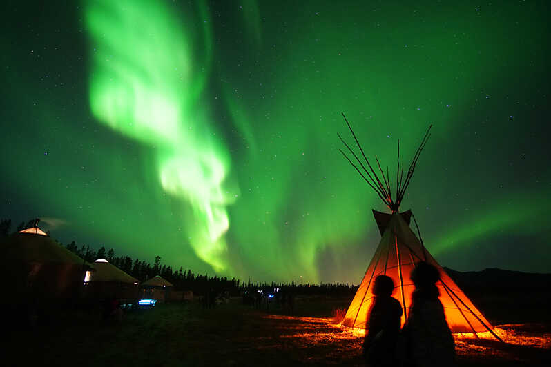

Nature & Voyage
Sweetcase met en place un programme spécial pour organiser votre futur voyage en toute tranquilité tout en vous proposant des destinations de rêves, dans le monde entier !
 Découvrez de nouvelles expériences de vie.
Sweetcase vous propose de découvrir des destinations unique tout en vous livrant des conseils
pour un voyage écologique et culturel réussi.
Nos équipes locales vous feront découvrir des lieux insolites ainsi que des paysages à couper le souffle.
Pour exalter la magie de la découverte du monde,
nous avons à coeur de donner du sens à nos voyages.
Plus que visiter un pays, cette sélection d'échappées teintées de vert,
encore plus engagées, vous invite à le vivre en conscience, ancrées dans une démarche
sociale et éco-responsable.
Sweetcase met en place un programme spécial pour organiser votre futur voyage en toute tranquilité tout en vous proposant des destinations de rêves, dans le monde entier !
Vous recherchez un voyage plus authentique et responsable? Découvrez les expériences insolites dénichées par nos experts et expertes locales, nos conseils et bonnes pratiques pour voyages plus en harmonie avec les cultures et les milieux naturels.
Tous les voyages demandent un minimum d'organisation pratique. C'est pourquoi nous recueillons pour vous des astuces voyage. Vous cherchez le sac idéal pour partir en vadrouille ? Vous vous demandez comment vous protéger des moustiques ? Vous séchez au moment de choisir votre destination ? Qu'à cela ne tienne, la team Sweetcase est la pour vous prodiguer ses bons conseils. Pratique, non ? Découvrez également les mesures à prendre pour un bon déroulement de votre voyage à l'étranger.
Voyagez à l'étranger, c'est aussi adopter la bonne attitude que requiert la situation.
Voici quelques conseils qui peuvent s'avérer utiles:
Langue : Vous n'êtes pas obligé de connaitre la langue locale parfaitement mais essayez d'apprendre quelques mots de base comme savoir dire bonjour, merci ou encore au revoir.
Votre expérience à l'étranger est également une occassion d'enrichir votre vocabulaire dans une toute nouvelle langue !
Coutumes : Observez et écoutez. Essayez de bien décoder les habitudes locales, la politesse,
afin de vous fondre le mieux possible dans le décor et d'en profiter au maximum.
Vêtements : Adoptez une tenue adaptée aux lieux que vous visitez.
Photo : Demandez toujours la permission avant de prendre quelqu'un en photo.
Patience : Soyez patient. Voyager c'est prendre le temps de découvrir autre chose.
Oubliez le stress que vous accumulé toute l'année et prenez le temps d'apprivoiser le nouveau pays que vous visitez et ses habitants.
Santé : N'oubliez pas de consulter les pré-requis nécessaires avant votre voyage à l'étranger.